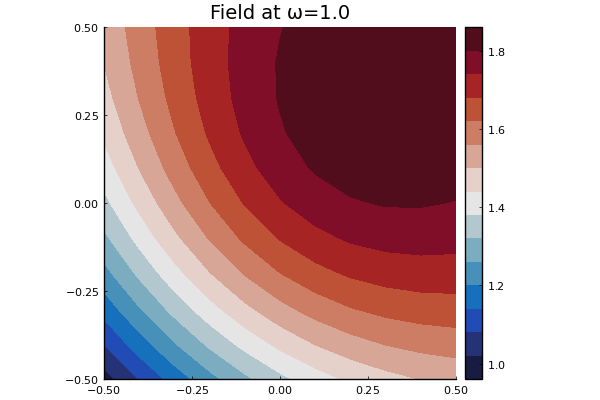

RegularSources
RegularSource is a struct which represents any source, also called an incident wave. See RegularSource for a list of relevant types and functions.
Acoustics
For acoustics, any wave field $u_{\text{in}}(x,y)$ that satisfies $\nabla^2 u_{\text{in}}(x,y) + k^2 u_{\text{in}}(x,y) = 0$, with $k = \dfrac{\omega}{c}$, can be a source.
Two commonly used sources are a plane wave and point source. These can then be added together to create more complicated sources, like immitating a finite sized transducer / source.
For a plane-wave of the form $u_{\text{in}}(x,y) = A \mathrm e^{\mathrm i k \mathbf n \cdot (\mathbf x - \mathbf x_0)}$, where $A$ is the amplitude, $\mathbf n = (n_1,n_2,n_2)$ is unit vector which points in the direction of propagation, and $\mathbf x_0 = (x_0,y_0,z_0)$ is the initially position (or origin) of the source, we can use
julia> dimension = 3;
julia> medium = Acoustic(dimension; ρ = 1.0, c = 1.0);
julia> A = 1.0;
julia> n = [1.0, 1.0, 1.0];
julia> x0 = [1.0, 0.0, 0.0];
julia> plane_wave = plane_source(medium; amplitude = A, direction = n, position = x0);We can plot this source wave one frequency ω by using
julia> ω = 1.0;
julia> plot_origin = zeros(3); plot_dimensions = 2 .* ones(3);
julia> plot_domain = Box(plot_origin, plot_dimensions);
julia> using Plots; pyplot();
julia> plot(plane_wave, ω; region_shape = plot_domain, y = 0.0) # in 3d currently only x-z slices are plotted for a given fixed y
Another useful source is the point source. In any dimension we consider the point source to be the zero order of the outgoing_basis_function, which are the basis for all outgoing waves.
The point source for 2D is $u_{\text{in}}(x,y) = \frac{\mathrm i A}{4} \mathrm H_0^{(1)}(k \|(x-x_0,y-y_0)\|)$ and for for 3D it is $u_{\text{in}}(x,y) = \frac{A}{4 \pi} \frac{e^{i k \| x - x_0\|)}}{\| x - x_0\|}$ where $A$ is the amplitude, $\mathbf x_0$ is the origin of the point source, and $\mathrm H_0^{(1)}$ is the Hankel function of the first kind.
julia> x0 = [0.0,-1.2, 0.0];
julia> point_wave = point_source(medium, x0, A);julia> plot(point_wave, ω; region_shape = plot_domain)NOTE: Because the point source has a singularity at $x_0$ it is best to avoid plotting, and evaluating the field, close to $x_0$.
This can be achieved by using
run(point_wave, ω; region_shape = plot_domain, exclude_region=some_region)orplot(point_wave, ω; region_shape = plot_domain, exclude_region=some_region)both of which rely on the functionpoints_in_shape.
Creating new sources
The easiest way to create new sources is to just sum together predefined sources:
julia> source = (3.0 + 1.0im) * point_wave + plane_wave;
julia> plot(source, ω; bounds = plot_domain)
For example, we can use this to create a finite emitter/transducer source,
julia> xs = LinRange(-0.7, 0.7, 30);
julia> source = sum(xs) do x point_source(medium, [x, 0.0, -1.1]) end;julia> plot(source, 4.0; y = 0.0, bounds = plot_domain, field_apply = abs, res = 40)where field_apply is applied to the wave field at every point, the default is field_apply = real, and res is the resolution along both the $x$ and $y$ axis. Note, this is not computationally very efficient. See source.jl for the very abstract code behind the scenes.
To define a new source you will need to understand the internals below.
RegularSource internals
The struct RegularSource has three fields: medium, field, and coef, explained with examples below:
julia> plane_wave = plane_source(Acoustic(1.0, 1.0, 2); direction = [1.0, 0.0]);
julia> plane_wave.medium # the physical medium
Acoustic(1.0, 1.0 + 0.0im, 2)
julia> x = [1.0, 1.0]; ω = 1.0;
julia> plane_wave.field(x,ω) # the value of the field
0.5403023058681398 + 0.8414709848078965imTo calculate the scattering from a particle due to a source, we need the coefficients $a_n(\mathbf x_0, \omega) = \text{RegularSource.coefficients(n, x0, ω)}.$ We use these coefficients to represent the source in a radial coordinate system. That is, for any origin $\mathbf x_0$, we need to represent the incident wave $u_{\text{in}}(\mathbf x)$ using a series or regular waves
\[u_{\text{in}}(\mathbf x) = \sum_n a_n (\mathbf x_0, \omega) \mathrm v_n (\mathbf x - \mathbf x_0),\]
where for the scalar wave equation:
$\mathrm v{n} (\mathbf x) = \begin{cases} \mathrm J{n}(k r) \mathrm e^{\mathrm i \theta n} & \text{for } \mathbf x \in \mathbb R^2, \ \mathrm j{\ell}(k r) \mathrm Y{\ell}^m (\hat{\mathbf x}) & \text{for } \mathbf x \in \mathbb R^3, \ \end{cases} $
where for the first case $(r,\theta)$ are the polar coordinates and $n$ sums over $-N,-N+1, \cdots, N$, where $N$ is the basis order, and $\mathrm J_n$ is a Bessel function. For the second case, we use a spherical coordinates with $r = \| \mathbf x\|$ and $\hat{\mathbf x} = \mathbf x/\|\mathbf x\|$, $n$ denotes the multi-index $n=\{\ell,m\}$ with summation over $\ell = 0, 1, \cdots,N$ and $m=-\ell,-\ell+1,\ell$, $\mathrm j_\ell$ is a spherical Bessel function, and $\mathrm Y_\ell^m$ is a spherical harmonic.
Both the inbuilt plane and point sources have functions coef which satisfy the above identity, for example
julia> using LinearAlgebra, SpecialFunctions;
julia> medium = Acoustic(2.0, 0.1, 2);
julia> source = plane_source(medium);
julia> x0 = [1.0,1.0]; ω = 0.9;
julia> x = x0 + 0.1*rand(2); basis_order = 10;
julia> vs = regular_basis_function(medium, ω);
julia> source.field(x, ω) ≈ sum(source.coefficients(basis_order, x0, ω) .* vs(basis_order, x - x0))
trueThe package also supplies a convenience function source_expand, which represents the source in terms of regular waves, for example:
julia> source2 = source_expand(source, x0; basis_order = 10);
julia> source.field(x, ω) ≈ source2(x, ω)
true